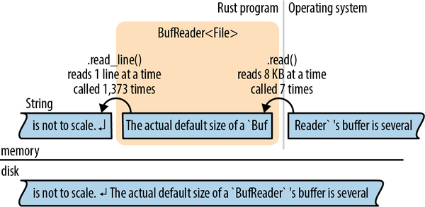

Doolittle: What concrete evidence do you have that you exist?
Bomb #20: Hmmmm... well... I think, therefore I am.
Doolittle: That’s good. That’s very good. But how do you know that anything else exists?
Bomb #20: My sensory apparatus reveals it to me.
Dark Star
Input and output are the limbs that turn the disembodied logic of a program into something that can reach out and interact with the world. Most of the time, that means working with filesystems and network interfaces, but there are more exotic types of I/O, too.
As it often strives to do, Rust’s standard library makes the easy cases easy. Reading a UTF-8 formatted text file (or HTML document, or CSV, or what have you) is as easy as calling std::fs::read_to_string:
letcontents=std::fs::read_to_string("file.txt").expect("Unable to read file");
Convenience functions like this make it easy to write lots of programs, but they’re all built on top of a relatively simple foundation of two I/O traits: Read and Write. In this chapter, we’ll demonstrate how to use these traits to read and write files, and how to work with the filesystem, the terminal, and the network.
Readers are values that your program can read bytes from. They implement the std::io::Read trait. Examples include:
Files opened using std::fs::File::open(filename)
std::net::TcpStreams, for receiving data over the network
std::io::stdin(), for reading from the process’s standard input stream
std::io::Cursor<&[u8]> and std::io::Cursor<Vec<u8>> values, which are readers that “read” from a byte array or vector that’s already in memory
Writers are values that your program can write bytes to. They implement the std::io::Write trait. Examples include:
Files opened using std::fs::File::create(filename)
std::net::TcpStreams, for sending data over the network
std::io::stdout() and std::io:stderr(), for writing to the terminal
Vec<u8>, a writer whose write methods append to the vector
std::io::Cursor<Vec<u8>>, which is similar but lets you both read and write data, and seek to different positions within the vector
std::io::Cursor<&mut [u8]>, which is much like std::io::Cursor<Vec<u8>>, except that it can’t grow the buffer, since it’s just a slice of some existing byte array
Since the Read and Write traits are part of the standard library, they are used throughout the Rust ecosystem, and it’s quite common to write generic code that works across a variety of input or output channels. For example, here’s a function that copies all bytes from any reader to any writer:
usestd::io::{self,ErrorKind,Read,Write};constDEFAULT_BUF_SIZE:usize=8*1024;pubfncopy<R,W>(reader:&mutR,writer:&mutW)->io::Result<u64>whereR:Read+?Sized,W:Write+?Sized,{letmutbuf=[0;DEFAULT_BUF_SIZE];letmutwritten=0;loop{letlen=matchreader.read(&mutbuf){Ok(0)=>returnOk(written),Ok(len)=>len,Err(refe)ife.kind()==ErrorKind::Interrupted=>continue,Err(e)=>returnErr(e),};writer.write_all(&buf[..len])?;written+=lenasu64;}}
This is a simplified implementation of std::io::copy() from Rust’s standard library. Since it’s generic, you can use it to copy data from a File to a TcpStream, from Stdin to an in-memory Vec<u8>, etc.
If the error-handling code here is unclear, revisit Chapter 7. We’ll be using the Result type constantly in the pages ahead; it’s important to have a good grasp of how it works.
The std::io traits Read and Write, along with BufRead and Seek, are so commonly used that there’s a prelude module containing only those traits:
usestd::io::prelude::*;
You’ll see this once or twice in this chapter. We also make a habit of importing the std::io module itself:
usestd::io::{self,ErrorKind,Read,Write};
The self keyword here declares io as an alias to the std::io module. That way, std::io::Result and std::io::Error can be written more concisely as io::Result and io::Error, and so on.
std::io::Read has several methods for reading data. All of them take the reader itself by mut reference.
reader.read(&mut buffer)Reads some bytes from the data source and stores them in the given buffer. The type of the buffer argument is &mut [u8]. This reads up to buffer.len() bytes.
The return type is io::Result<u64>, which is a type alias for Result<u64, io::Error>. On success, the u64 value is the number of bytes read—which may be equal to or less than buffer.len(), even if there’s more data to come, at the whim of the data source. Ok(0) means there is no more input to read.
On error, .read() returns an io::Error. This error type has a .kind() method that returns an error code of type io::ErrorKind, an enum with members like PermissionDenied and ConnectionReset. Most indicate serious errors that can’t be ignored, but one kind of error should be handled specially. io::ErrorKind::Interrupted corresponds to the Unix error code EINTR, which means the read happened to be interrupted by a signal. Unless the program is designed to do something clever with signals, it should just retry the read. The code for copy(), in the preceding section, shows an example of this.
As you can see, the .read() method is very low level, even inheriting quirks of the underlying operating system. If you’re implementing the Read trait for a new type of data source, this gives you a lot of leeway. If you’re trying to read some data, it’s a pain. Therefore, Rust provides several higher-level convenience methods. All of them have default implementations in terms of .read(). They all handle ErrorKind::Interrupted, so you don’t have to.
reader.read_to_end(&mut byte_vec)Reads all remaining input from this reader, appending it to byte_vec, which is a Vec<u8>. Returns an io::Result<usize>, the number of bytes read.
There is no limit on the amount of data this method will pile into the vector, so don’t use it on an untrusted source. (You can impose a limit using the .take() method, described in the next list.)
reader.read_to_string(&mut string)This is the same, but appends the data to the given String. If the stream isn’t valid UTF-8, this returns an ErrorKind::InvalidData error.
In some programming languages, byte input and character input are handled by different types. These days, UTF-8 is so dominant that Rust acknowledges this de facto standard and supports UTF-8 everywhere. Other character sets are supported with the open source encoding crate.
reader.read_exact(&mut buf)Reads exactly enough data to fill the given buffer. The argument type is &[u8]. If the reader runs out of data before reading buf.len() bytes, this returns an ErrorKind::UnexpectedEof error.
Those are the main methods of the Read trait. In addition, there are three adapter methods that take the reader by value, transforming it into an iterator or a different reader:
reader.bytes()Returns an iterator over the bytes of the input stream. The item type is io::Result<u8>, so an error check is required for every byte. Furthermore, this calls reader.read() once per byte, which will be very inefficient if the reader is not buffered.
reader.chain(reader2)Returns a new reader that produces all the input from reader, followed by all the input from reader2.
reader.take(n)Returns a new reader that reads from the same source as reader, but is limited to n bytes of input.
There is no method for closing a reader. Readers and writers typically implement Drop so that they are closed automatically.
For efficiency, readers and writers can be buffered, which simply means they have a chunk of memory (a buffer) that holds some input or output data in memory. This saves on system calls, as shown in Figure 18-1. The application reads data from the BufReader, in this example by calling its .read_line() method. The BufReader in turn gets its input in larger chunks from the operating system.
This picture is not to scale. The actual default size of a BufReader’s buffer is several kilobytes, so a single system read can serve hundreds of .read_line() calls. This matters because system calls are slow.
(As the picture shows, the operating system has a buffer too, for the same reason: system calls are slow, but reading data from a disk is slower.)

Buffered readers implement both Read and a second trait, BufRead, which adds the following methods:
reader.read_line(&mut line)Reads a line of text and appends it to line, which is a String. The newline character '\n' at the end of the line is included in line. If the input has Windows-style line endings, "\r\n", both characters are included in line.
The return value is an io::Result<usize>, the number of bytes read, including the line ending, if any.
If the reader is at the end of the input, this leaves line unchanged and returns Ok(0).
reader.lines()Returns an iterator over the lines of the input. The item type is io::Result<String>. Newline characters are not included in the strings. If the input has Windows-style line endings, "\r\n", both characters are stripped.
This method is almost always what you want for text input. The next two sections show some examples of its use.
reader.read_until(stop_byte, &mut byte_vec), reader.split(stop_byte)These are just like .read_line() and .lines(), but byte-oriented, producing Vec<u8>s instead of Strings. You choose the delimiter stop_byte.
BufRead also provides a pair of low-level methods, .fill_buf() and .consume(n), for direct access to the reader’s internal buffer. For more about these methods, see the online documentation.
The next two sections cover buffered readers in more detail.
Here is a function that implements the Unix grep utility. It searches many lines of text, typically piped in from another command, for a given string:
usestd::io;usestd::io::prelude::*;fngrep(target:&str)->io::Result<()>{forline_resultinio::stdin().lines(){letline=line_result?;ifline.contains(target){println!("{line}");}}Ok(())}
The function is straightforward: it loops over the lines coming from standard input. Because this iterator produces Result values, we use the ? operator to check for errors.
Suppose we want to take our grep program a step further and add support for searching files on disk. We can make this function generic:
fngrep<R>(target:&str,reader:R)->io::Result<()>whereR:BufRead,{forline_resultinreader.lines(){letline=line_result?;ifline.contains(target){println!("{line}");}}Ok(())}
Now we can pass it either an StdinLock or a buffered File:
grep(&target,io::stdin().lock())?;// okletf=File::open(file)?;grep(&target,BufReader::new(f))?;// also ok
Note that a File is not automatically buffered. File implements Read but not BufRead. However, it’s easy to create a buffered reader for a File, or any other unbuffered reader. BufReader::new(reader) does this. (To set the size of the buffer, use BufReader::with_capacity(size, reader).)
In most languages, files are buffered by default. If you want unbuffered input or output, you have to figure out how to turn buffering off. In Rust, File and BufReader are two separate library features, because sometimes you want files without buffering, and sometimes you want buffering without files (for example, you may want to buffer input from the network).
The full program, including error handling and some crude argument parsing, is shown here:
// grep - Search stdin or some files for lines matching a given string.usestd::error::Error;usestd::fs::File;usestd::io::prelude::*;usestd::io::{self,BufReader};usestd::path::PathBuf;fngrep<R>(target:&str,reader:R)->io::Result<()>whereR:BufRead,{forline_resultinreader.lines(){letline=line_result?;ifline.contains(target){println!("{line}");}}Ok(())}fngrep_main()->Result<(),Box<dynError>>{// Get the command-line arguments. The first argument is the// string to search for; the rest are filenames.letmutargs=std::env::args().skip(1);lettarget=matchargs.next(){Some(s)=>s,None=>Err("usage: grep PATTERN FILE...")?,};letfiles:Vec<PathBuf>=args.map(PathBuf::from).collect();iffiles.is_empty(){grep(&target,io::stdin().lock())?;}else{forfileinfiles{letf=File::open(file)?;grep(&target,BufReader::new(f))?;}}Ok(())}fnmain(){letresult=grep_main();ifletErr(err)=result{eprintln!("{err}");std::process::exit(1);}}
Several reader methods, including .lines(), return iterators that produce Result values. The first time you want to collect all the lines of a file into one big vector, you’ll run into a problem getting rid of the Results:
// ok, but not what you wantletresults:Vec<io::Result<String>>=reader.lines().collect();// error: can't convert collection of Results to Vec<String>letlines:Vec<String>=reader.lines().collect();
The second try doesn’t compile: what would happen to the errors? The straightforward solution is to write a for loop and check each item for errors:
letmutlines=vec![];forline_resultinreader.lines(){lines.push(line_result?);}
Not bad; but it would be nice to use .collect() here, and it turns out that we can. We just have to know which type to ask for:
letlines=reader.lines().collect::<io::Result<Vec<String>>>()?;
How does this work? The standard library contains an implementation of FromIterator for Result—easy to overlook in the online documentation—that makes this possible:
impl<T,E,C>FromIterator<Result<T,E>>forResult<C,E>whereC:FromIterator<T>,{...}
This requires some careful reading, but it’s a nice trick. Assume C is any collection type, like Vec or HashSet. As long we already know how to build a C from an iterator of T values, we can build a Result<C, E> from an iterator producing Result<T, E> values. We just need to draw values from the iterator and build the collection from the Ok results, but if we ever see an Err, stop and pass that along.
In other words, io::Result<Vec<String>> is a collection type, so the .collect() method can create and populate values of that type.
As we’ve seen, input is mostly done using methods. Output is a bit different.
Throughout the book, we’ve used println!() to produce plain-text output:
println!("Hello, world!");println!("The greatest common divisor of {numbers:?} is {d}");println!();// print a blank line
There’s also a print!() macro, which does not add a newline character at the end, and eprintln! and eprint! macros that write to the standard error stream. The formatting codes for all of these are the same as those for the format! macro, described in “Formatting Values”.
To send output to a writer, use the write!() and writeln!() macros. They are the same as print!() and println!(), except for two differences:
writeln!(io::stderr(),"error: world not helloable")?;writeln!(&mutbyte_vec,"The greatest common divisor of {numbers:?} is {d}")?;
One difference is that the write macros each take an extra first argument, a writer. The other is that they return a Result, so errors must be handled. That’s why we used the ? operator at the end of each line.
The print macros don’t return a Result; they simply panic if the write fails. Since they write to the terminal, this is rare.
The Write trait has these methods:
writer.write(&buf)Writes some of the bytes in the slice buf to the underlying stream. It returns an io::Result<usize>. On success, this gives the number of bytes written, which may be less than buf.len(), at the whim of the stream.
Like Reader::read(), this is a low-level method that you should avoid using directly.
writer.write_all(&buf)writer.flush()Flushes any buffered data to the underlying stream. Returns Result<()>.
Note that while the println! and eprintln! macros automatically flush the stdout and stderr stream, the print! and eprint! macros do not. You may have to call flush() manually when using them.
Like readers, writers are closed automatically when they are dropped.
Just as BufReader::new(reader) adds a buffer to any reader, BufWriter::new(writer) adds a buffer to any writer:
letfile=File::create("tmp.txt")?;letwriter=BufWriter::new(file);
To set the size of the buffer, use BufWriter::with_capacity(size, writer).
When a BufWriter is dropped, all remaining buffered data is written to the underlying writer. However, if an error occurs during this write, the error is ignored. (Since this happens inside BufWriter’s .drop() method, there is no useful place to report the error.) To make sure your application notices all output errors, manually .flush() buffered writers before dropping them.
We’ve already seen two ways to open a file:
File::open(filename)Opens an existing file for reading. It returns an io::Result<File>, and it’s an error if the file doesn’t exist.
File::create(filename)Creates a new file for writing. If a file exists with the given filename, it is truncated.
Note that the File type is in the filesystem module, std::fs, not std::io.
When neither of these fits the bill, you can use OpenOptions to specify the exact desired behavior:
usestd::fs::OpenOptions;letlog=OpenOptions::new().append(true)// if file exists, add to the end.open("server.log")?;letfile=OpenOptions::new().write(true).create_new(true)// fail if file exists.open("new_file.txt")?;
The methods .append(), .write(), .create_new(), and so on are designed to be chained like this: each one returns self. This method-chaining design pattern is common enough to have a name in Rust: it’s called a builder. std::process::Command is another example. For more details on OpenOptions, see the online documentation.
Once a File has been opened, it behaves like any other reader or writer. You can add a buffer if needed. The File will be closed automatically when you drop it.
In real-world code, you might want to consider using the fs-err crate. It works just like std::fs, except that it produces more detailed error messages. Its API is intentionally identical, so simply listing it as a dependency in your Cargo.toml file and changing your code’s imports is enough:
usefs_err::OpenOptions;letmutfile=OpenOptions::new().write(true).create_new(true).open("new_file.txt")?;...
With std::fs::OpenOptions, this might fail with the error File exists (os error 17), which is not very informative. fs_err::OpenOptions uses a little extra memory during each operation to produce messages that include more information:
failed to open file `new_file.txt`: File exists (os error 17)
File also implements the Seek trait, which means you can hop around within a File rather than reading or writing in a single pass from the beginning to the end. Seek is defined like this:
pubtraitSeek{fnseek(&mutself,pos:SeekFrom)->io::Result<u64>;}pubenumSeekFrom{Start(u64),End(i64),Current(i64),}
Thanks to the enum, the seek method is nicely expressive: use file.seek(SeekFrom::Start(0)) to rewind to the beginning and use file.seek(SeekFrom::Current(-8)) to go back a few bytes, and so on.
Seeking within a file is slow. Unless the file is stored entirely in memory, you should expect it to take as long as reading several megabytes of data.
So far, this chapter has used File as its example workhorse, but there are many other useful reader and writer types:
io::stdin()Returns a reader for the standard input stream. Its type is io::Stdin. Since this is shared by all threads, each read acquires and releases a mutex.
Stdin has a .lock() method that acquires the mutex and returns an io::StdinLock, a buffered reader that holds the mutex until it’s dropped. Individual operations on the StdinLock therefore avoid the mutex overhead.
io::stdout(), io::stderr()Return Stdout and Stderr writer types for the standard output and standard error streams. These too have mutexes and .lock() methods.
Vec<u8>Implements Write. Writing to a Vec<u8> extends the vector with the new data.
(String, however, does not implement Write. To build a string using Write, first write to a Vec<u8>, and then use String::from_utf8(vec) to convert the vector to a string.)
Cursor::new(buf)Creates a Cursor, a buffered reader that reads from buf. This is how you create a reader that reads from a String. The argument buf can be any type that implements AsRef<[u8]>, so you can also pass a &[u8], &str, or Vec<u8>.
Cursors are trivial internally. They have just two fields: buf itself and an integer, the offset in buf where the next read will start. The position is initially 0.
Cursors implement Read, BufRead, and Seek. If the type of buf is &mut [u8] or Vec<u8>, then the Cursor also implements Write. Writing to a cursor overwrites bytes in buf starting at the current position. If you try to write past the end of a &mut [u8], you’ll get a partial write or an io::Error. Using a cursor to write past the end of a Vec<u8> is fine, though: it grows the vector. Cursor<&mut [u8]> and Cursor<Vec<u8>> thus implement all four of the std::io::prelude traits.
std::net::TcpStreamRepresents a TCP network connection. Since TCP enables two-way communication, it’s both a reader and a writer.
The constructor TcpStream::connect(("hostname", PORT)) tries to connect to a server and returns an io::Result<TcpStream>.
std::process::CommandSupports spawning a child process and piping data to its standard input, like so:
usestd::process::{Command,Stdio};letmutchild=Command::new("grep").arg("-e").arg("a.*e.*i.*o.*u").stdin(Stdio::piped()).spawn()?;letmutto_child=child.stdin.take().unwrap();forwordinmy_words{writeln!(to_child,"{word}")?;}drop(to_child);// close grep's stdin, so it will exitchild.wait()?;
The type of child.stdin is Option<std::process::ChildStdin>; here we’ve used .stdin(Stdio::piped()) when setting up the child process, so child.stdin is definitely populated when .spawn() succeeds. If we hadn’t, child.stdin would be None.
Command also has similar methods .stdout() and .stderr(), which can be used to request readers in child.stdout and child.stderr.
std::io::pipe()Creates a pipe, a one-way channel for bytes, implemented by the operating system. On Unix, it’s a thin wrapper around the pipe system call; on Windows, it wraps CreatePipe. It returns a Result<(PipeReader, PipeWriter)>: on success, a paired reader and writer. Any bytes written to the writer are stored in the pipe until they are consumed by reading from the reader.
std::process::Command has enough convenience methods for creating command pipelines that you usually won’t need to call std::io::pipe yourself. However, we’ll show one use for a pipe in Chapter 21
The std::io module also offers a few functions that return trivial readers and writers:
io::sink()This is the no-op writer. All the write methods return Ok, but the data is just discarded.
io::empty()This is the no-op reader. Reading always succeeds, but returns end-of-input.
Many open source crates build on the std::io framework to offer extra features.
The byteorder crate offers ReadBytesExt and WriteBytesExt traits that add methods to all readers and writers for binary input and output:
usebyteorder::{LittleEndian,ReadBytesExt,WriteBytesExt};letn=reader.read_u32::<LittleEndian>()?;writer.write_i64::<LittleEndian>(nasi64)?;
The flate2 crate provides adapter methods for reading and writing gzipped data:
useflate2::read::GzDecoder;letfile=File::open("access.log.gz")?;letmutgzip_reader=GzDecoder::new(file);
The serde crate, and its associated format crates such as serde_json, implement serialization and deserialization: they convert back and forth between Rust structs and bytes. We mentioned this once before, in “Traits and Other People’s Types”. Now we can take a closer look.
Suppose we have some data—the map for a text adventure game—stored in a HashMap:
typeRoomId=String;// each room has a unique nametypeRoomExits=Vec<(char,RoomId)>;// ...and a list of exitstypeRoomMap=HashMap<RoomId,RoomExits>;// room names and exits, simple// Create a simple map.letmutmap=RoomMap::new();map.insert("Cobble Crawl".to_string(),vec![('W',"Debris Room".to_string())],);map.insert("Debris Room".to_string(),vec![('E',"Cobble Crawl".to_string()),('W',"Sloping Canyon".to_string()),],);...
Turning this data into JSON for output is a single line of code:
serde_json::to_writer(&mutstd::io::stdout(),&map)?;
Internally, serde_json::to_writer uses the serialize method of the serde::Serialize trait. The library attaches this trait to all types that it knows how to serialize, and that includes all of the types that appear in our data: strings, characters, tuples, vectors, and HashMaps.
serde is flexible. In this program, the output is JSON data, because we chose the serde_json serializer. Other formats, like MessagePack, are also available. Likewise, you could send this output to a file, a Vec<u8>, or any other writer. The preceding code prints the data on stdout. Here it is:
{"Debris Room":[["E","Cobble Crawl"],["W","Sloping Canyon"]],"Cobble Crawl":[["W","Debris Room"]]}
serde also includes support for deriving the two key serde traits:
#[derive(Serialize, Deserialize)]structPlayer{location:String,items:Vec<String>,health:u32,}
This #[derive] attribute can make your compiles take a bit longer, so you need to explicitly ask serde to support it when you list it as a dependency in your Cargo.toml file. Here’s what we used for the preceding code:
[dependencies]serde={version="1.0.228",features=["derive"]}serde_json="1.0.150"
See the serde documentation for more details. In short, the build system autogenerates implementations of serde::Serialize and serde::Deserialize for Player, so that serializing a Player value is simple:
serde_json::to_writer(&mutstd::io::stdout(),&player)?;
{"location":"Cobble Crawl","items":["a wand"],"health":3}
Now that we’ve shown how to work with readers and writers, the next few sections cover Rust’s features for working with files and directories, which live in the std::path and std::fs modules. All of these features involve working with filenames, so we’ll start with the filename types.
Inconveniently, your operating system does not force filenames to be valid Unicode. Here are two Linux shell commands that create text files. Only the first uses a valid UTF-8 filename:
$echo"hello world">ô.txt$echo"O brave new world, that has such filenames in't">$'\xf4'.txt
Both commands pass without comment, because the Linux kernel doesn’t know UTF-8 from Ogg Vorbis. To the kernel, any string of bytes (excluding null bytes and slashes) is an acceptable filename. It’s a similar story on Windows: almost any string of 16-bit “wide characters” is an acceptable filename, even strings that are not valid UTF-16. The same is true of other strings the operating system handles, like command-line arguments and environment variables.
Rust strings are always valid Unicode. Filenames are almost always Unicode in practice, but Rust has to cope somehow with the rare case where they aren’t. This is why Rust has std::ffi::OsStr and OsString.
OsStr is a string type that’s a superset of UTF-8. Its job is to be able to represent all filenames, command-line arguments, and environment variables on the current system, whether they’re valid Unicode or not. On Unix, an OsStr can hold any sequence of bytes. On Windows, an OsStr is stored using an extension of UTF-8 that can encode any sequence of 16-bit values, including unmatched surrogates.
So we have two string types: str for actual Unicode strings; and OsStr for whatever nonsense your operating system can dish out. We’ll introduce one more: std::path::Path, for filenames. This one is purely a convenience. Path is exactly like OsStr, but it adds many handy filename-related methods, which we’ll cover in the next section. Use Path for both absolute and relative paths. For an individual component of a path, use OsStr.
Lastly, for each string type, there’s a corresponding owning type: a String owns a heap-allocated str, a std::ffi::OsString owns a heap-allocated OsStr, and a std::path::PathBuf owns a heap-allocated Path. Table 18-1 outlines some of the features of each type.
| str | OsStr | Path | |
|---|---|---|---|
| Dynamically sized type, always passed by reference | Yes | Yes | Yes |
| Can contain any Unicode text | Yes | Yes | Yes |
| Looks just like UTF-8, normally | Yes | Yes | Yes |
| Can contain non-Unicode data | No | Yes | Yes |
| Text processing methods | Yes | No | No |
| Filename-related methods | No | No | Yes |
| Owned, growable, heap-allocated equivalent | String |
OsString |
PathBuf |
| Convert to owned type | .to_string() |
.to_os_string() |
.to_path_buf() |
All three of these types implement a common trait, AsRef<Path>, so we can easily declare a generic function that accepts “any filename type” as an argument. This uses a technique we showed in “AsRef and AsMut”:
usestd::io;usestd::path::Path;fnswizzle_file<P>(path_arg:P)->io::Result<()>whereP:AsRef<Path>,{letpath=path_arg.as_ref();...}
All the standard functions and methods that take path arguments use this technique, so you can freely pass string literals to any of them.
Path offers the following methods, among others:
Path::new(str)Converts a &str or &OsStr to a &Path. This doesn’t copy the string. The new &Path points to the same bytes as the original &str or &OsStr:
usestd::path::Path;lethome_dir=Path::new("/home/fwolfe");
(The similar method OsStr::new(str) converts a &str to a &OsStr.)
path.parent()Returns the path’s parent directory, if any. The return type is Option<&Path>.
This doesn’t copy the path. The parent directory of path is always a substring of path:
assert_eq!(Path::new("/home/fwolfe/program.txt").parent(),Some(Path::new("/home/fwolfe")),);
path.file_name()Returns the last component of path, if any. The return type is Option<&OsStr>.
In the typical case, where path consists of a directory, then a slash, and then a filename, this returns the filename:
usestd::ffi::OsStr;assert_eq!(Path::new("/home/fwolfe/program.txt").file_name(),Some(OsStr::new("program.txt")),);
path.is_absolute(), path.is_relative()These tell whether the file is absolute, like the Unix path /usr/bin/advent or the Windows path C:\Program Files, or relative, like src/main.rs.
path1.join(path2)Joins two paths, returning a new PathBuf:
letpath1=Path::new("/usr/share/dict");assert_eq!(path1.join("words"),Path::new("/usr/share/dict/words"),);
If path2 is an absolute path, this just returns a copy of path2, so this method can be used to convert any path to an absolute path:
letabs_path=std::env::current_dir()?.join(any_path);
path.components()Returns an iterator over the components of the given path, from left to right. The item type of this iterator is std::path::Component, an enum that can represent all the different pieces that can appear in filenames:
pubenumComponent<'a>{Prefix(PrefixComponent<'a>),// a drive letter or share (on Windows)RootDir,// the root directory, `/` or `\`CurDir,// the `.` special directoryParentDir,// the `..` special directoryNormal(&'aOsStr),// plain file and directory names}
For example, the Windows path \\venice\Music\A Love Supreme\04-Psalm.mp3 consists of a Prefix representing \\venice\Music, followed by a RootDir, and then two Normal components representing A Love Supreme and 04-Psalm.mp3.
For details, see the online documentation.
path.ancestors()Returns an iterator that walks from path up to the root. Each item produced is a Path: first path itself, then its parent, then its grandparent, and so on:
letfile=Path::new("/home/jimb/calendars/calendar-18x18.pdf");assert_eq!(file.ancestors().collect::<Vec<_>>(),vec![Path::new("/home/jimb/calendars/calendar-18x18.pdf"),Path::new("/home/jimb/calendars"),Path::new("/home/jimb"),Path::new("/home"),Path::new("/"),],);
This is much like calling parent repeatedly until it returns None. The final item is always a root or prefix path.
These methods work on strings in memory. Paths also have some methods that query the filesystem: .exists(), .is_file(), .is_dir(), .read_dir(), .canonicalize(), and so on. See the online documentation to learn more.
There are three methods for converting Paths to strings. Each one allows for the possibility of invalid UTF-8 in the Path:
path.to_str()Converts a Path to a string, as an Option<&str>. If path isn’t valid UTF-8, this returns None:
ifletSome(file_str)=path.to_str(){println!("{file_str}");}// ...otherwise skip this weirdly named file
path.to_string_lossy()This is basically the same thing, but it manages to return some sort of string in all cases. If path isn’t valid UTF-8, these methods make a copy, replacing each invalid byte sequence with the Unicode replacement character, U+FFFD ('�').
The return type is std::borrow::Cow<str>: an either borrowed or owned string. To get a String from this value, use its .to_owned() method. (For more about Cow, see “Borrow and ToOwned at Work: The Humble Cow”.)
path.display()println!("Download found. You put it in: {}",dir_path.display());
The value this returns isn’t a string, but it implements std::fmt::Display, so it can be used with format!(), println!(), and friends. If the path isn’t valid UTF-8, the output may contain the � character.
Table 18-2 shows some of the functions in std::fs and their approximate equivalents on Unix and Windows. All of these functions return io::Result values. They are Result<()> unless otherwise noted.
| Rust function | Unix | Windows | |
|---|---|---|---|
| Creating and deleting |
create_dir(path) |
mkdir() |
CreateDirectory() |
create_dir_all(path) |
like mkdir -p |
like mkdir |
|
remove_dir(path) |
rmdir() |
RemoveDirectory() |
|
remove_dir_all(path) |
like rm -r |
like rmdir /s |
|
remove_file(path) |
unlink() |
DeleteFile() |
|
| Copying, moving, and linking |
copy(src_path, dest_path) |
like cp -p |
CopyFileEx() |
rename(src_path, dest_path) |
rename() |
MoveFileEx() |
|
hard_link(src_path, dest_path) |
link() |
CreateHardLink() |
|
| Inspecting | canonicalize(path) |
realpath() |
GetFinalPathNameByHandle() |
metadata(path) |
stat() |
GetFileInformationByHandle() |
|
symlink_metadata(path) |
lstat() |
GetFileInformationByHandle() |
|
read_dir(path) |
opendir() |
FindFirstFile() |
|
read_link(path) |
readlink() |
FSCTL_GET_REPARSE_POINT |
|
| Permissions | set_permissions(path, perm) |
chmod() |
SetFileAttributes() |
(The number returned by copy() is the size of the copied file, in bytes. For creating symbolic links, see “Platform-Specific Features”.)
As you can see, Rust strives to provide portable functions that work predictably on Windows as well as macOS, Linux, and other Unix systems.
A full tutorial on filesystems is beyond the scope of this book, but if you’re curious about any of these functions, you can easily find more about them online. We’ll show some examples in the next section.
All of these functions are implemented by calling out to the operating system. For example, std::fs::canonicalize(path) does not merely use string processing to eliminate . and .. from the given path. It resolves relative paths using the current working directory, and it chases symbolic links. It’s an error if the path doesn’t exist.
The Metadata type that’s produced by std::fs::metadata(path) and std::fs::symlink_metadata(path) contains such information as the file type and size, permissions, and timestamps. As always, consult the documentation for details.
As a convenience, the Path type has a few of these built in as methods: path.metadata(), for example, is the same thing as std::fs::metadata(path).
To list the contents of a directory, use std::fs::read_dir or, equivalently, the .read_dir() method of a Path:
forentry_resultinpath.read_dir()?{letentry=entry_result?;println!("{}",entry.file_name().to_string_lossy());}
Note the two uses of ? in this code. The first line checks for errors opening the directory. The second line checks for errors reading the next entry.
The type of entry is std::fs::DirEntry, and it’s a struct with just a few methods:
entry.file_name()entry.path()This is the same, but with the original path joined to it, producing a new PathBuf. If the directory we’re listing is "/home/jimb", and entry.file_name() is ".emacs", then entry.path() would return PathBuf::from("/home/jimb/.emacs").
entry.file_type()Returns an io::Result<FileType>. FileType has .is_file(), .is_dir(), and .is_symlink() methods.
entry.metadata()The special directories . and .. are not listed when reading a directory.
Here’s a more substantial example. The following code recursively copies a directory tree from one place to another on disk:
usestd::fs;usestd::io;usestd::path::Path;/// Copies the existing directory `src` to the target path `dst`.fncopy_dir_to(src:&Path,dst:&Path)->io::Result<()>{if!dst.is_dir(){fs::create_dir(dst)?;}forentry_resultinsrc.read_dir()?{letentry=entry_result?;letfile_type=entry.file_type()?;copy_to(&entry.path(),&file_type,&dst.join(entry.file_name()))?;}Ok(())}
A separate function, copy_to, copies individual directory entries:
/// Copies whatever is at `src` to the target path `dst`.fncopy_to(src:&Path,src_type:&fs::FileType,dst:&Path)->io::Result<()>{ifsrc_type.is_file(){fs::copy(src,dst)?;}elseifsrc_type.is_dir(){copy_dir_to(src,dst)?;}else{returnErr(io::Error::other(format!("don't know how to copy: {}",src.display()),));}Ok(())}
So far, our copy_to function can copy files and directories. Suppose we also want to support symbolic links on Unix.
There is no portable way to create symbolic links that work on both Unix and Windows, but the standard library offers a Unix-specific symlink function:
usestd::os::unix::fs::symlink;
With this, our job is easy. We need only add a branch to the if expression in copy_to:
...}elseifsrc_type.is_symlink(){lettarget=src.read_link()?;symlink(target,dst)?;...
This will work as long as we compile our program only for Unix systems, such as Linux and macOS.
The std::os module contains various platform-specific features, like symlink. The actual body of std::os in the standard library looks like this (taking some poetic license):
//! OS-specific functionality.#[cfg(unix)]pubmodunix;#[cfg(windows)]pubmodwindows;#[cfg(target_os ="ios")]pubmodios;#[cfg(target_os ="linux")]pubmodlinux;#[cfg(target_os ="macos")]pubmodmacos;...
The #[cfg] attribute indicates conditional compilation: each of these modules exists only on some platforms. This is why our modified program, using std::os::unix, will successfully compile only for Unix: on other platforms, std::os::unix doesn’t exist.
If we want our code to compile on all platforms, with support for symbolic links on Unix, we must use #[cfg] in our program as well. In this case, it’s easiest to import symlink on Unix, while defining our own symlink stub on other systems:
#[cfg(unix)]usestd::os::unix::fs::symlink;/// Stub implementation of `symlink` for platforms that don't provide it.#[cfg(not(unix))]fnsymlink<P:AsRef<Path>,Q:AsRef<Path>>(src:P,_dst:Q,)->std::io::Result<()>{Err(io::Error::other(format!("can't copy symbolic link: {}",src.as_ref().display()),))}
It turns out that symlink is something of a special case. Most Unix-specific features are not standalone functions but rather extension traits that add new methods to standard library types. (We covered extension traits in “Traits and Other People’s Types”.) There’s a prelude module that can be used to enable all of these extensions at once:
usestd::os::unix::prelude::*;
For example, on Unix, this adds a .mode() method to std::fs::Permissions, providing access to the underlying u32 value that represents permissions on Unix. Similarly, it extends std::fs::Metadata with accessors for the fields of the underlying struct stat value—such as .uid(), the user ID of the file’s owner.
All told, what’s in std::os is pretty basic. Much more platform-specific functionality is available via third-party crates, like winreg for accessing the Windows registry.
A tutorial on networking is well beyond the scope of this book. However, if you already know a bit about network programming this section will help you get started with networking in Rust.
For low-level networking code, start with the std::net module, which provides cross-platform support for TCP and UDP networking. Use the native_tls crate for SSL/TLS support.
These modules provide the building blocks for straightforward, blocking input and output over the network. You can write a simple server in a few lines of code, using std::net and spawning a thread for each connection. For example, here’s an “echo” server:
usestd::net::TcpListener;usestd::{io,thread};/// Accepts connections forever, spawning a thread for each one.fnecho_main(addr:&str)->io::Result<()>{letlistener=TcpListener::bind(addr)?;println!("listening on {addr}");loop{// Wait for a client to connect.let(mutstream,addr)=listener.accept()?;println!("connection received from {addr}");// Spawn a thread to handle this client.letmutwrite_stream=stream.try_clone()?;thread::spawn(move||{// Echo everything we receive from `stream` back to it.io::copy(&mutstream,&mutwrite_stream).expect("error in client thread: ");println!("connection closed");});}}fnmain(){echo_main("127.0.0.1:17007").expect("error: ");}
An echo server simply repeats back everything you send to it. This kind of code is not so different from what you’d write in Java or Python. (We’ll cover std::thread::spawn() in the next chapter.)
However, for high-performance servers, you’ll need to use asynchronous input and output. Chapter 20 covers Rust’s support for asynchronous programming.
Higher-level protocols are supported by third-party crates. For example, the reqwest crate offers a beautiful API for HTTP clients. Here is a complete command-line program that fetches any document with an http: or https: URL and dumps it to your terminal. This code was written using reqwest = "0.13.4", with its "blocking" feature enabled. reqwest also provides an asynchronous interface.
usestd::error::Error;usestd::io;fnhttp_get_main(url:&str)->Result<(),Box<dynError>>{// Send the HTTP request and get a response.letmutresponse=reqwest::blocking::get(url)?;if!response.status().is_success(){Err(format!("{}",response.status()))?;}// Read the response body and write it to stdout.letstdout=io::stdout();io::copy(&mutresponse,&mutstdout.lock())?;Ok(())}fnmain(){letargs:Vec<String>=std::env::args().collect();ifargs.len()!=2{eprintln!("usage: http-get URL");return;}ifletErr(err)=http_get_main(&args[1]){eprintln!("error: {err}");}}
The actix-web framework for HTTP servers offers high-level touches such as the Service and Transform traits, which help you compose an app from pluggable parts. The websocket crate implements the WebSocket protocol. And so on. Rust is a young language with a busy open source ecosystem. Support for networking is rapidly expanding.